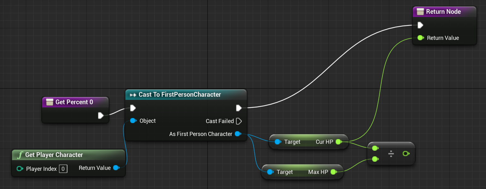
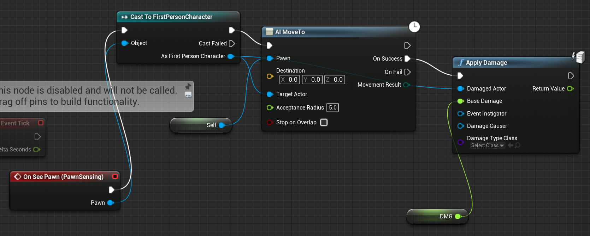

Fantasy arena
Fantasy arena is a 3D online multiplayer game where the goal is to defeat the other team through having a higher amount of kills. THe theme here is fantasy, using swords, magic, that kind of stuff. Every unique character has unique abilities that stes them apart form other characters.
So far, I have created AI that can move to and damgage players. The damage component will be used as an integral part of the game.
I have always thought there was something missing that would have made Overwatch more interesting. Despite its massive appeal, the fact that the game was first person made the game a little bland (My game is currently first person. I plan to change that in the near future). Since there was no such game to keep me occupied, I plan on making it myself, whatever it may be.
At this moment, there are no plans to incorporate quests.
Below is the code used to damage the player.
 